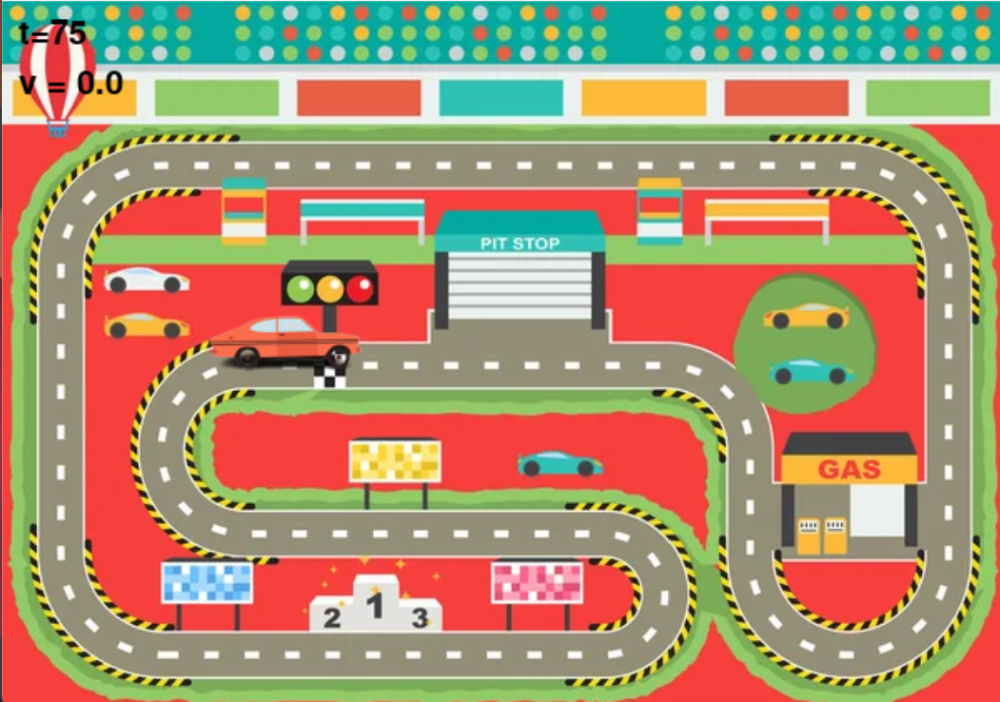
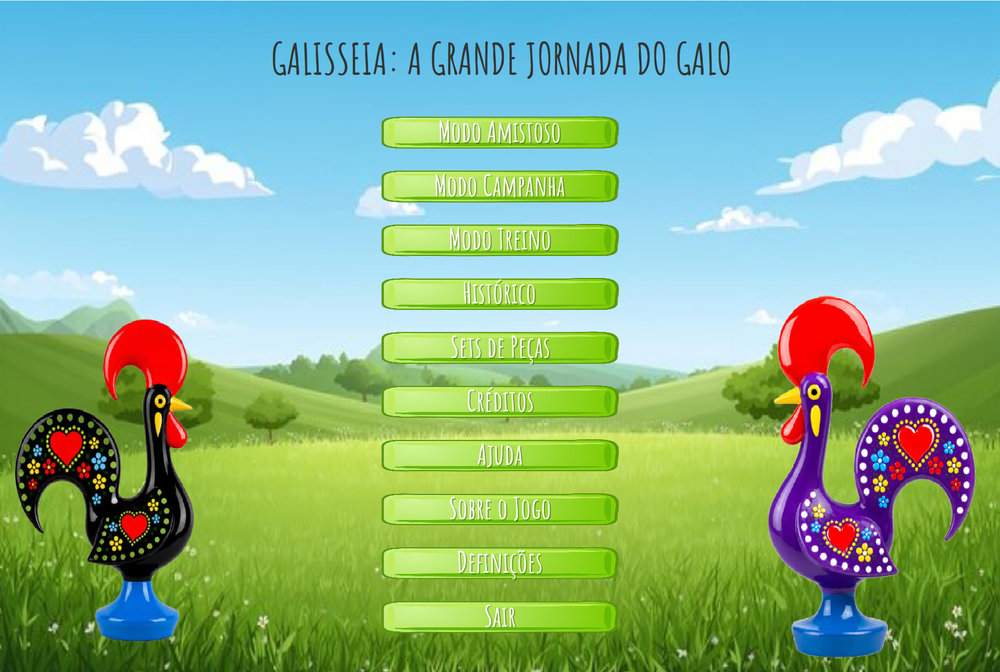
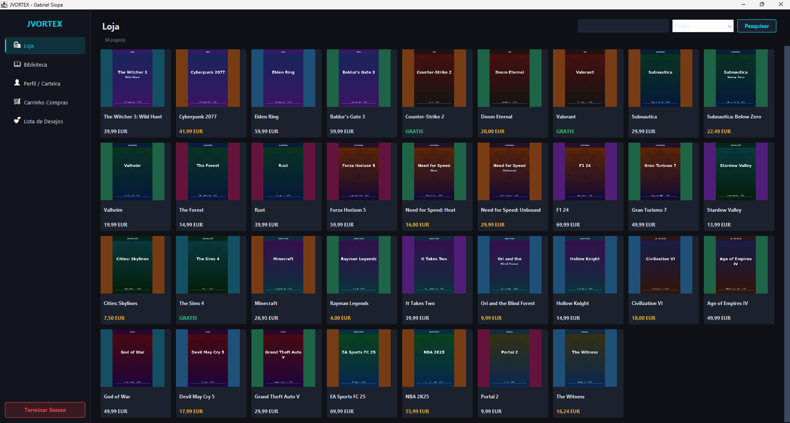

As nossas Competências
Áreas em que nos especializamos
Web
Temos competências no desenvolvimento front-end, utilizando HTML5, CSS3 e Bootstrap para a criação de interfaces responsivas e interativas.
Programação
Possuímos experiência em Java e Python, incluindo bibliotecas como Swing e NumPy, aplicadas ao desenvolvimento de aplicações e projetos interativos.
Microprocessadores e Robótica
Temos conhecimentos de Arduino e programação em C, bem como de arquitetura de CPUs e robótica, combinando desenvolvimento de software com interação com hardware.
Modelação e Animação 3D
Modelação e animação de personagens em 3D através do Blender é um dos nossos fortes, incluindo a criação e animação de elementos tridimensionais.
Sobre Nós
Um pouco sobre nós
Olá! O meu nome é Eduardo e sou estudante no Instituto Superior de Engenharia de Lisboa (ISEL), onde frequento atualmente o 2.º ano da Licenciatura em Engenharia Informática e Multimédia. Nasci em São Sebastião, Setúbal, mas foi em Lisboa que passei grande parte da minha vida e onde tenho vindo a desenvolver o meu percurso académico e pessoal.
O meu nome é Gabriel e sou estudante no curso de Engenharia Informática e Multimédia no Instituto Superior de Engenharia de Lisboa (ISEL), onde frequento atualmente o 2.º ano da Licenciatura. Sou natural de Alcobaça, no distrito de Leiria, e tenho um grande interesse por tecnologia e jogos, duas áreas que despertam o meu interesse e me motivam a explorar novas ideias.
HTML5
Python
Java
CSS3
Para saber mais, faça download do nosso currículo.
Descarregar CurrículoProjetos
Alguns projetos que desenvolvemos

Car Race
Uma simulação de corrida 2D desenvolvida em Python utilizando a biblioteca Pygame. O projeto envolveu a implementação de um carro conduzido automaticamente, capaz de seguir um percurso predefinido através de parâmetros de movimento configuráveis e elementos visuais personalizados.

Galisseia : A Grande Jornada do Galo
Galisseia é uma aventura de Ultimate Tic-Tac-Toe que introduz um sistema de tabuleiro em múltiplas camadas, combinando nove grelhas de Jogo do Galo interligadas num desafio estratégico de maior complexidade. O jogo inclui adversários com Pseudo-IA, modos Campanha, Treino e Amigável, dificuldade progressiva, power-ups e conteúdos desbloqueáveis.

Loja Online de Jogos
Uma aplicação de loja digital de jogos inspirada em plataformas como a Steam. O projeto inclui modos distintos de Cliente e Administrador, permitindo aos utilizadores comprar jogos, gerir bibliotecas, escrever avaliações e atribuir classificações, enquanto os administradores podem gerir produtos e conteúdos dos utilizadores.